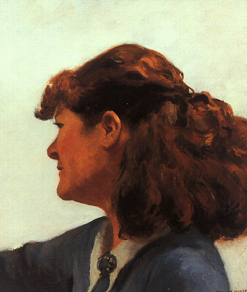

Biografija
Rani život
Rođen je 1882. u Najaku u Njujorku. Bio je jedan od dvoje dece imućne porodice. Roditelji su mu bili Holandskog porekla. Majka ju se bila Elizabet Grifits Smit, a otac Garet Henri Hoper, prodavac suve robe. Edvard i njegova jedina sestra Marion su pohađali državne i privatne škole. Odrasli su u strogom baptističkom domaćinstvu. Njegov otac je bio blage prirode, a u domaćinstvu su dominirale žene: majka, sestra, baka i sluškinja.
Imao je talenat za crtanje od pete godine. Počeo je da potpisuje i datira svoje crteže sa 10 godina. Najraniji crteži su bile ugljene skice geometrijskih oblika, vaza, činija, čaša i kutija. Do svojih tinejdžerskih dela, koristio je pero i mastilo, ugljen, vodene boje i ulje. Crtao je sve od prirode do političkih stripova. Na svojim ranim autoportretima, Hoper je sebe predstavljao kao mršavog, neelegantnog i prostog. Iako je bio visok i tih tinejdžer, njegov šaljivi smisao za humor je našao odraz u njegovoj umetnosti, ponekad u prikazima imigranata ili žena koje dominiraju muškarcima u komičnim situacijama.
Brojni autoportreti Edvarda Hopera:
Godine 1905. Hoper je dobio honorarni posao u reklamnoj agenciji, gde je kreirao dizajn naslovnica za trgovačke časopise. Hoper je zamrzeo ilustraciju, ali je morao da nastavi da radi iz ekonomskih razloga do sredine 1920-ih. Privremeno je pobegao putujući tri puta u Evropu, svako sa središtem u Parizu, da bi proučavao tamošnju umetničku scenu. Učio je sam i na njega nisu uticale nove struje u umetnosti. Bio je veoma impresioniran Rembrantom, posebno njegovom "Noćnom stražom", za koju je rekao da je bila "najčudesnija stvar koju sam video; to je prošlost verovanja u njenu stvarnost". Hoper je započeo da slika urbane i arhitektonske scene u mračnoj paleti. Nakon toga se prebacio na svetliju paletu impresionalista pre nego čto se vratio tamnijoj paleti s kojom mu je bilo prirodnije. Proveo je mnogo vremena slikajući ulice i kafiće, i obilazeći opere i teatre. Za razliku od svojih savremenika koji su imitirali apstraktne kubističke eksperimente, Hoper je bio privučen realističkoj umetnosti. Nije priznao nikakve evropske uticaje osim francuskog gravera Čarlsa Meriona, čije je pariske scene Hoper imitirao.

Hoperov uticaj iz Pariza, Čarls Merion
Godine borbe
Nakon povratka sa svog poslednjeg putovanja u Pariz, Hoper se mučio da definiše sopstveni stil. Nevoljno, vratio se ilustraciji da bi se izdržao. Bio je primoran da traži projekte i poslove u magazinima i agencijama. Teško mu je bilo da nađe šta da crta. Njegov kolega ilustrator Volter Titl je opisao Hoperovo depresivno emocionalno stanje u oštrim terminima, gledajući svog prijatelja "kako pati... od dugih perioda neosvojive inercije, sedeći nekad danima pred štafelajem u bespomoćnoj nesreći, nesposoban da podigne ruku da razbije čini".
Na Ermori Šou-u, Hoper je zaradio $250 kad je prodao prvu sliku, "Jedrenje", 1911. američkom biznismenu Tomasu F. Vietoru koju je naslikao preko jednog od svojih ranijih autoportreta. Imao je 31 godinu i iako se nadao da će prva prodaja ubrzo dovesti do drugih, njegova karijera neće uspeti još mnogo godina. Ubrzo nakon smrti svoj oca, Hoper se odselio u Vašington Skver Nort 3 apartman u Grinvič Vilidž delu na Menhetnu, gde je živeo do kraja života.
Sledeće godine je dobio nalog da napravi nekoliko filmskih postera i da se bavi publicitetom za filmsku kompaniju. Iako nije voleo ilustracije, Hoper je doživotno bio posvećen bioskopu i pozorištu, koje je tretirao kao subjekte za svoje slike. Svaka forma je uticala na njegove kompozicione metode. Nakon ćorsokaka svojih uljanih slika, Hoper se okrenuo bakrorezu. Do 1923. je proizveo većinu svojih radova(oko 70) u ovom medijumu, od kojih su mnogi urbane scene Pariza i Njujorka. Takođe je izradio nekoliko plakata za ratne napore, i nastavio je sa povremenim komercijalnim projektima. Kada je mogao, slikao je poljane prilikom svojih poseta Novoj Engleskoj, posebno na umetničkim kolonijama u Ogankvitu i na ostrvu Monhegan. Tokom ranih 1920-ih, njegovi bakropisi su počeli da dobijaju javno priznanje. Izrazili su neke od njegovih kasnijih tema kao "Noći u El Vozu" (parovi u tišini), "Večernji vetar" (usamljena žena) i "Ket" (jednostavna nautička scena). Takođe je naslikao dve do svojih mnogobrojnih "prozorskih" slika koje će postati neke od glavnih tema njegovih slika: "Devojka sa šivaćom mašinom" i "Unutrašnjost na mesečini", koje obe prikazuju figuru u blizini prozora stana kroz koji se gleda napolje ili uz ugla spolja koji gleda unutra.
Brak
Do 1923. godine, Hoperov spori uspon je konačno poneo proboj. Ponovo se susreo sa Žozefin Nivison, umetnicom i bivšom učenicom Roberta Anrija, tokom letnjeg slikarskog putovanja u Gloster u Masačusetsu. Bili su sušte suprotnosti: ona je bila niska, otvorena, društvena i druželjubiva, dok je on bio visok, tajnovit, stidljiv, tih i introspektivan. Venčali su se godinu dana kasnije. Žozefin je svoju karijeru se podredila njegovoj i delila njegov povučeni stil života. Ostatak njihovih života se vrteo oko njihovog stana u gradu i leta u Južnom Truru na Kejp Kodu. Iako je Žozefin pozirala za mnoge od njegovih slika, imala je samo jedan formalni portret naslikan od strane njenog muža. Ona je upravljala njegovom karijerom i njegovim intervjuima, bila je njegov primarni model i životna saputnica.
Hoper i Nivison

Hoperov portret Džo Nivison
Godine 1905. Hoper je dobio honorarni posao u reklamnoj agenciji, gde je kreirao dizajn naslovnica za trgovačke časopise. Hoper je zamrzeo ilustraciju, ali je morao da nastavi da radi iz ekonomskih razloga do sredine 1920-ih. Privremeno je pobegao putujući tri puta u Evropu, svako sa središtem u Parizu, da bi proučavao tamošnju umetničku scenu. Učio je sam i na njega nisu uticale nove struje u umetnosti. Bio je veoma impresioniran Rembrantom, posebno njegovom "Noćnom stražom", za koju je rekao da je bila "najčudesnija stvar koju sam video; to je prošlost verovanja u njenu stvarnost". Hoper je započeo da slika urbane i arhitektonske scene u mračnoj paleti. Nakon toga se prebacio na svetliju paletu impresionalista pre nego čto se vratio tamnijoj paleti s kojom mu je bilo prirodnije. Proveo je mnogo vremena slikajući ulice i kafiće, i obilazeći opere i teatre. Za razliku od svojih savremenika koji su imitirali apstraktne kubističke eksperimente, Hoper je bio privučen realističkoj umetnosti. Nije priznao nikakve evropske uticaje osim francuskog gravera Čarlsa Meriona, čije je pariske scene Hoper imitirao.
Hoperov uticaj iz Pariza, Čarls Merion
Nakon povratka sa svog poslednjeg putovanja u Pariz, Hoper se mučio da definiše sopstveni stil. Nevoljno, vratio se ilustraciji da bi se izdržao. Bio je primoran da traži projekte i poslove u magazinima i agencijama. Teško mu je bilo da nađe šta da crta. Njegov kolega ilustrator Volter Titl je opisao Hoperovo depresivno emocionalno stanje u oštrim terminima, gledajući svog prijatelja "kako pati... od dugih perioda neosvojive inercije, sedeći nekad danima pred štafelajem u bespomoćnoj nesreći, nesposoban da podigne ruku da razbije čini".
Na Ermori Šou-u, Hoper je zaradio $250 kad je prodao prvu sliku, "Jedrenje", 1911. američkom biznismenu Tomasu F. Vietoru koju je naslikao preko jednog od svojih ranijih autoportreta. Imao je 31 godinu i iako se nadao da će prva prodaja ubrzo dovesti do drugih, njegova karijera neće uspeti još mnogo godina. Ubrzo nakon smrti svoj oca, Hoper se odselio u Vašington Skver Nort 3 apartman u Grinvič Vilidž delu na Menhetnu, gde je živeo do kraja života.
Sledeće godine je dobio nalog da napravi nekoliko filmskih postera i da se bavi publicitetom za filmsku kompaniju. Iako nije voleo ilustracije, Hoper je doživotno bio posvećen bioskopu i pozorištu, koje je tretirao kao subjekte za svoje slike. Svaka forma je uticala na njegove kompozicione metode. Nakon ćorsokaka svojih uljanih slika, Hoper se okrenuo bakrorezu. Do 1923. je proizveo većinu svojih radova(oko 70) u ovom medijumu, od kojih su mnogi urbane scene Pariza i Njujorka. Takođe je izradio nekoliko plakata za ratne napore, i nastavio je sa povremenim komercijalnim projektima. Kada je mogao, slikao je poljane prilikom svojih poseta Novoj Engleskoj, posebno na umetničkim kolonijama u Ogankvitu i na ostrvu Monhegan. Tokom ranih 1920-ih, njegovi bakropisi su počeli da dobijaju javno priznanje. Izrazili su neke od njegovih kasnijih tema kao "Noći u El Vozu" (parovi u tišini), "Večernji vetar" (usamljena žena) i "Ket" (jednostavna nautička scena). Takođe je naslikao dve do svojih mnogobrojnih "prozorskih" slika koje će postati neke od glavnih tema njegovih slika: "Devojka sa šivaćom mašinom" i "Unutrašnjost na mesečini", koje obe prikazuju figuru u blizini prozora stana kroz koji se gleda napolje ili uz ugla spolja koji gleda unutra.
Do 1923. godine, Hoperov spori uspon je konačno poneo proboj. Ponovo se susreo sa Žozefin Nivison, umetnicom i bivšom učenicom Roberta Anrija, tokom letnjeg slikarskog putovanja u Gloster u Masačusetsu. Bili su sušte suprotnosti: ona je bila niska, otvorena, društvena i druželjubiva, dok je on bio visok, tajnovit, stidljiv, tih i introspektivan. Venčali su se godinu dana kasnije. Žozefin je svoju karijeru se podredila njegovoj i delila njegov povučeni stil života. Ostatak njihovih života se vrteo oko njihovog stana u gradu i leta u Južnom Truru na Kejp Kodu. Iako je Žozefin pozirala za mnoge od njegovih slika, imala je samo jedan formalni portret naslikan od strane njenog muža. Ona je upravljala njegovom karijerom i njegovim intervjuima, bila je njegov primarni model i životna saputnica.